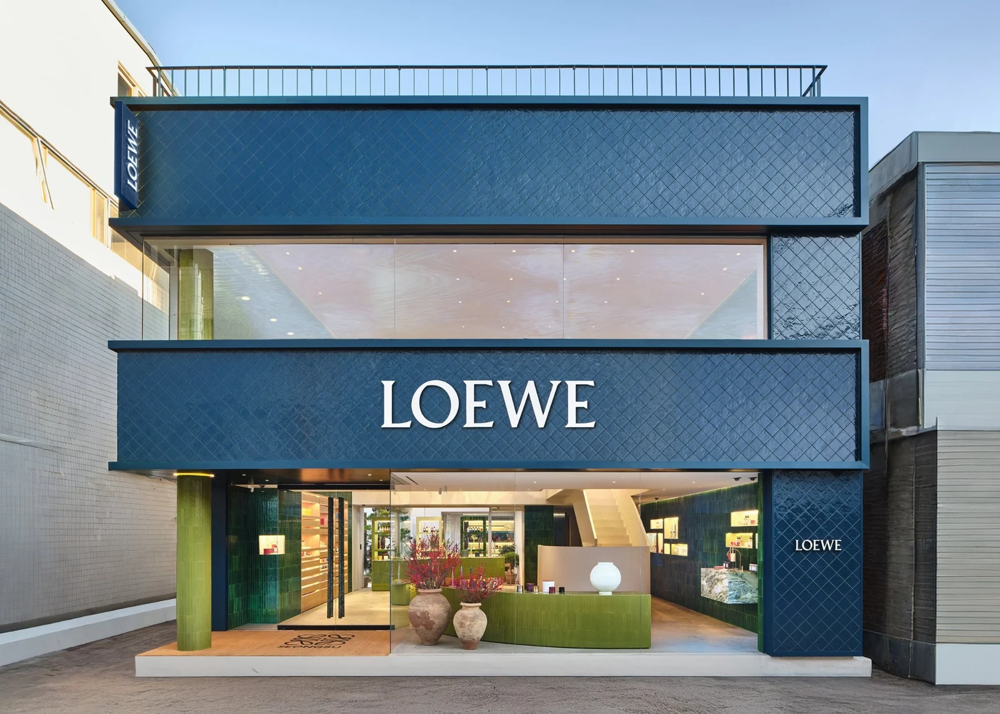
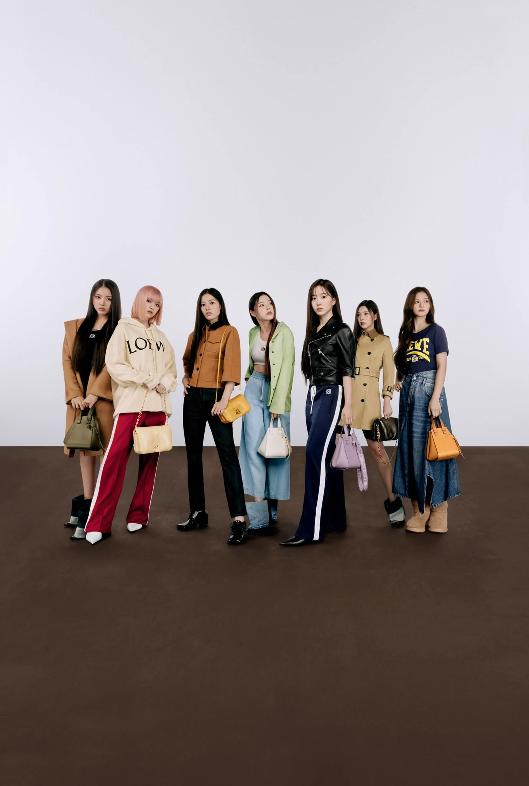
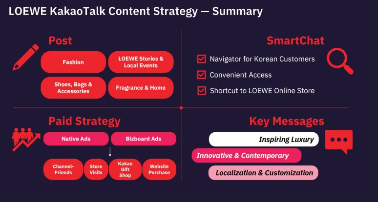
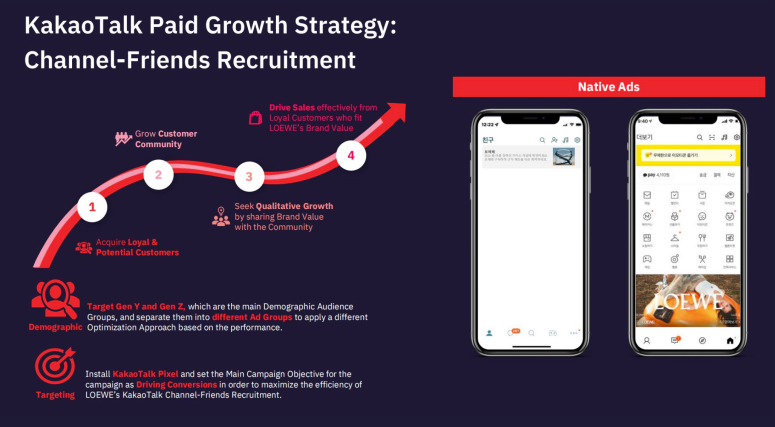
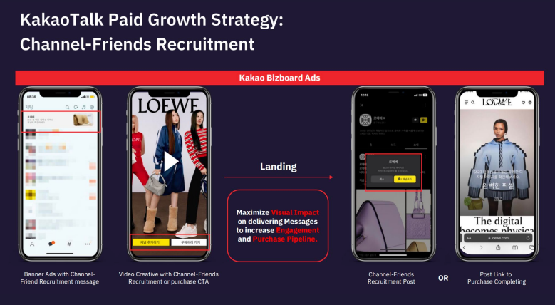

Build a useful brand channel
Organize fashion, product and local-event stories around what Korean customers wanted to explore.
Loewe Korea · Local ecosystem · 2022
Loewe’s global story was strong; Korea’s path from discovery to purchase was fragmented across search, content, messaging and commerce.


02 Approach
The plan combined content, paid recruitment and SmartChat utility so the relationship could move from discovery to direct brand access and purchase.



Organize fashion, product and local-event stories around what Korean customers wanted to explore.
Use Native and Bizboard ads to acquire likely customers, then optimize toward store visits and purchase.
Turn SmartChat into direct access to shopping, collections, client service and store information.
Takeaway
Localization is strongest when it changes the journey—not only the language.